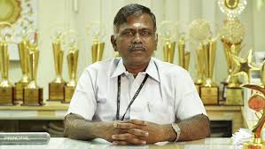

MEPCO SCHLENK ENGINEERING COLLEGE


Dr. S. Arivazhagan, the Principal of Mepco Schlenk Engineering College, Sivakasi, is an experienced academic leader known for his commitment to excellence in engineering education. Under his guidance, the college emphasizes quality teaching, research, innovation, and industry interaction. He plays a key role in maintaining academic standards, accreditation processes, and fostering a disciplined yet student-friendly learning environment. His leadership continues to support the institution’s vision of producing technically competent and socially responsible engineers.
Home | About | Department | Contact Us